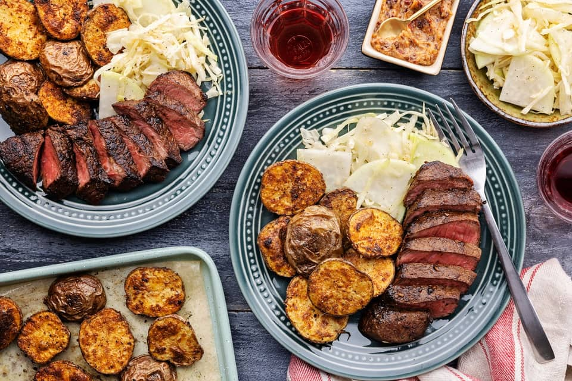

Steaks with Spicy Chipotle Butter

Description
A perfect partnership on the plate. Seared cuts of top sirloin beef rest easy with a sprinkling of Mexican-inspired spices browned into the surface. While the steaks are still hot, spread the slices with a compound chipiotle-garlic butter, for some deep, dark and spicy ambience. Taking up the sides are golden-edged baby potatoes roasted to just-soft on the inside, while thinkly sliced kohlrabi joins cabbage for a slaw with two kinds of crunch.
Ingredients
- 2 top sirloin beef medallions
- 15ml minced garlic
- 150g shredded cabbage
- 150g baby potatoes
- 1 kohlrabi
- 30ml apple cider vinegar
- 1 chipotle pepper in adobo
- 11g mexican moments spices
- oil
- 6 tbsp butter
- salt
- pepper
Steps
- Roast the potatoes
- Preheat oven to 450
- Place 6 tbsp butter in a small bowl to soften
- Halve potatoes
- Toss potatoes with oil, 2/3 of the spices, salt, & pepper
- Add potatoes to sheet pan, roast 20-25 minutes stirring halfway
- Mise en place
- Peel & quarter kohlrabi
- Rougly chop chipotle pepper, reserve adobo sauce
- Add chipotle pepper, adobo sauce, 1/2 of the garlic, salt, & pepper to the bowl of softened butter
- Cook the steaks
- Heat oil in a medium pan
- Pat steaks dry
- Season steaks with remaining spices, salt, & pepper
- Add steaks to pan, cook 3-5 minutes per side
- Transfer to cutting board and let rest for 5 minutes.
- Slice steaks against the grain
- Spread chipotle butter on steaks
- Make the slaw
- Combine vinegar, remaining garlic, oil, salt, & pepper
- Add cabbage and kohlrabi
- Toss
- Plate your dish
- Divide potatoes, steaks & slaw
Back to Recipes Page